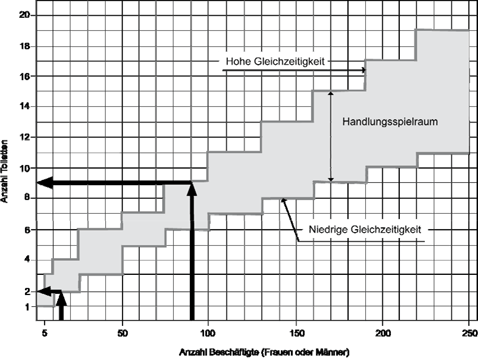
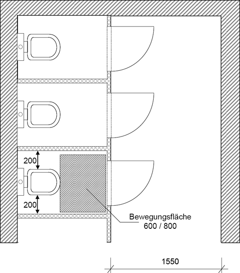
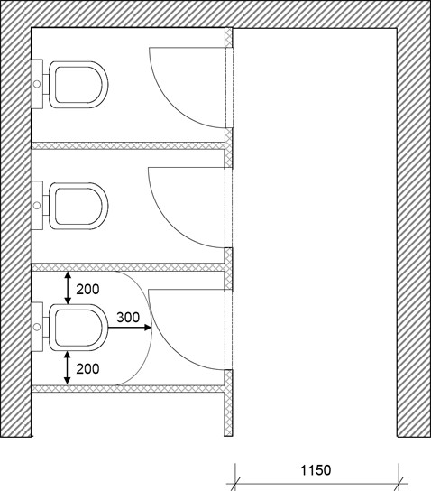
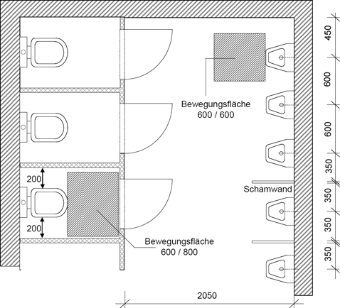
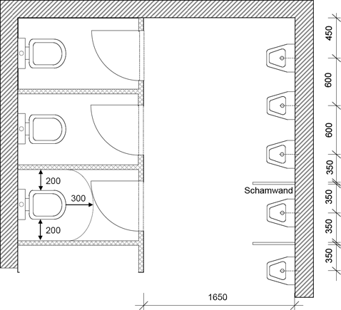
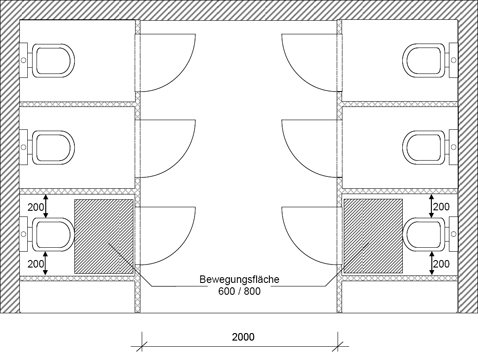
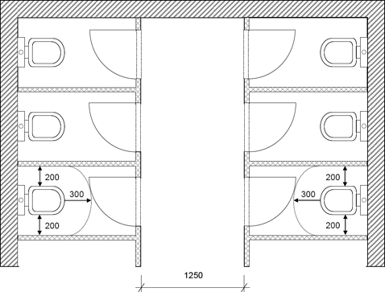

(1) In Toilettenräumen ist eine wirksame Lüftung zu gewährleisten. Bei freier Lüftung (Fensterlüftung) sind die Mindestquerschnitte für Lüftungsöffnungen nach Tabelle 1 einzuhalten (weitere Informationen siehe ASR A3.6 "Lüftung"). Lüftungstechnische Anlagen sind so auszulegen, dass ein Abluftvolumenstrom von 11 m³/(h m²) erreicht wird. Die Abluft aus Toilettenräumen darf nicht in andere Räume gelangen.
Tabelle 1: Mindestquerschnitte für freie Lüftung von Toilettenräumen
| System | Freier Querschnitt der Lüftungsöffnung/en je Sanitäreinrichtung* | |||||
| [m²/Toilette] | [m²/Urinal] | |||||
| einseitige Lüftung | 0,17 | 0,10 | ||||
| Querlüftung** | 0,10 | 0,06 | ||||
| ||||||
(2) Fußböden und Wände müssen leicht zu reinigen sein (weitere Informationen siehe ASR A1.5 "Fußböden").
(3) Toilettenräume und ihre Einrichtungen sind in Abhängigkeit von der Häufigkeit der Nutzung zu reinigen und bei Bedarf zu desinfizieren. Bei täglicher Nutzung müssen sie mindestens täglich gereinigt werden.
(1) Die Toilettenräume müssen sich in der Nähe der Arbeitsplätze, der Pausen-, Bereitschafts-, Wasch- oder Umkleideräume befinden. Die Weglänge zu Toilettenräumen sollte nicht länger als 50 m sein und darf 100 m nicht überschreiten. Die Toilettenräume müssen sich im gleichen Gebäude befinden und dürfen nicht weiter als eine Etage von ständigen Arbeitsplätzen entfernt sein. Der Weg von ständigen Arbeitsplätzen in Gebäuden zu Toiletten soll nicht durchs Freie führen.
(2) Hat der Toilettenraum mehr als eine Toilettenzelle oder ist ein unmittelbarer Zugang zum Toilettenraum aus einem Arbeits-, Pausen-, Bereitschafts-, Wasch-, Umkleide- oder Erste-Hilfe-Raum möglich, so ist ein Vorraum erforderlich. Im Vorraum darf sich kein Urinal befinden.
(3) Arbeitsstätten sind mit Toiletten für die Beschäftigten auszustatten. Dazu ist die in Tabelle 2 für niedrige Gleichzeitigkeit aufgeführte Mindestanzahl an Toiletten bereitzustellen. In Abhängigkeit von der Gleichzeitigkeit der Nutzung kann eine höhere Anzahl von Toiletten erforderlich sein (vgl. Abb. 1, mit Ablesebeispiel).
Bei mehr als 50 Beschäftigten kann die Mindestanzahl der Toiletten und Urinale in bestehenden Arbeitsstätten gegenüber den Angaben in Tabelle 2 um eins verringert werden, wenn ein Ausgleich geschaffen wird, z. B durch organisatorische Maßnahmen. Diese Maßnahmen können solange herangezogen werden, bis bestehende Arbeitsstätten wesentlich umgebaut werden.
(4) Für männliche Beschäftigte ist bei der Bereitstellung von Toiletten und Urinalen mindestens ein Drittel als Toiletten, der Rest als Urinale auszuführen. Die Urinale müssen so angeordnet oder gestaltet sein, dass eine Einsicht von außen nicht möglich ist. Es wird empfohlen, zwischen Urinalen eine Schamwand anzubringen. Aus hygienischen Gründen wird bei der Beschäftigung von männlichen Beschäftigten und der Notwendigkeit von nur einer Toilette empfohlen, trotzdem ein Urinal bereitzustellen.
(5) Ein Toilettenraum soll nicht mit mehr als zehn Toilettenzellen und zehn Urinalen ausgestattet sein.
Tabelle 2: Mindestanzahl von Toiletten einschließlich Urinale, Handwaschgelegenheiten
| weibliche oder männliche Beschäftigte | Mindestanzahl bei niedriger Gleichzeitigkeit der Nutzung | Mindestanzahl bei hoher Gleichzeitigkeit der Nutzung | ||
| Toiletten/Urinale | Handwasch- gelegenheiten | Toiletten/Urinale | Handwasch- gelegenheiten | |
| bis 5 | 1*) | 1 | 2 | 1 |
| 6 bis 10 | 1*) | 1 | 3 | 1 |
| 11 bis 25 | 2 | 1 | 4 | 2 |
| 26 bis 50 | 3 | 1 | 6 | 2 |
| 51 bis 75 | 5 | 2 | 7 | 3 |
| 76 bis 100 | 6 | 2 | 9 | 3 |
| 101 bis 130 | 7 | 3 | 11 | 4 |
| 131 bis 160 | 8 | 3 | 13 | 4 |
| 161 bis 190 | 9 | 3 | 15 | 5 |
| 191 bis 220 | 10 | 4 | 17 | 6 |
| 221 bis 250 | 11 | 4 | 19 | 7 |
| je weitere 30 Beschäftigte +1 | je weitere 90 Beschäftigte +1 | je weitere 30 Beschäftigte +2 | je weitere 90 Beschäftigte +2 | |
| *) für männliche Beschäftigte wird zuzüglich 1 Urinal empfohlen | ||||

Abb. 1: | Grafische Darstellung der Tabelle 2 |
(1) Bei Toilettenräumen oder Toilettenzellen ist eine Bewegungsfläche vor den Toiletten oder Urinalen erforderlich. Die Bewegungsfläche soll symmetrisch vor den Toiletten und Urinalen angeordnet sein. Für Toilettenräume sind die Mindestmaße nach Abb. 2.1, 2.2, 3.1, 3.2, 4.1 und 4.2 einzuhalten. Die Öffnungsrichtung der Tür (Türanschlag nach innen oder nach außen) ist zu berücksichtigen.
In bestehenden Toilettenzellen mit Türanschlag nach außen ist bis zu einem wesentlichen Umbau eine Reduzierung der Tiefe der Bewegungsfläche (600 mm) um 50 mm zulässig. In bestehenden Toilettenzellen mit Türanschlag nach innen ist bis zu einem wesentlichen Umbau eine Reduzierung des Abstandes Vorderkante Toilette bis Schwenkradius der Toilettentür um 100 mm zulässig.

Abb. 2.1: Einbündige Toilettenanlage, Türanschlag nach außen (Maße in mm)

Abb. 2.2: Einbündige Toilettenanlage, Türanschlag nach innen (Maße in mm)

Abb. 3.1: Einbündige Toilettenanlage mit Urinalen, Türanschlag nach außen (Maße in mm)

Abb. 3.2: Einbündige Toilettenanlage mit Urinalen, Türanschlag nach innen (Maße in mm)

Abb. 4.1: Zweibündige Toilettenanlage, Türanschlag nach außen (Maße in mm)

Abb. 4.2: Zweibündige Toilettenanlage, Türanschlag nach innen (Maße in mm)
(2) Trennwände und Türen von Toilettenzellen, die nicht raumhoch ausgeführt sind, müssen mindestens 1,90 m hoch sein. Sofern die Trennwand oder die Zellentür nicht mit dem Fußboden abschließt, muss der Abstand zwischen Fußboden und Unterkante zwischen 0,10 bis 0,15 m betragen.
(1) Jede Toilettenzelle und jeder Toilettenraum mit nur einer Toilette muss von innen abschließbar sein. Zusätzlich müssen sich darin Kleiderhaken, Papierhalter und Toilettenbürste befinden. An jeder von Frauen genutzten Toilette ist ein Hygienebehälter mit Deckel zur Verfügung zu stellen. In von Männern genutzten Toilettenräumen ist mindestens ein Hygienebehälter mit Deckel in einer gekennzeichneten Toilettenzelle bereitzustellen. Toilettenpapier muss stets bereitgehalten werden.
(2) Toilettenräume müssen mit Handwaschgelegenheiten (Handwaschbecken mit fließendem Wasser und geschlossenem Wasserabflusssystem) gemäß Tabelle 2 und Abfallbehältern ausgestattet sein. In Toilettenräumen müssen Mittel zum Reinigen (z. B. Seife in Seifenspendern) und Trocknen der Hände (z. B. Einmalhandtücher, Textilhandtuchautomaten oder Warmlufttrockner) bereitgestellt werden. Darüber hinaus sind bei Bedarf Warmwasser und Kleiderhaken bereitzustellen.
Ist in bestehenden Arbeitsstätten die Bereitstellung der geforderten Anzahl von Handwaschgelegenheiten mit Aufwendungen verbunden, die offensichtlich unverhältnismäßig sind, so hat der Arbeitgeber zu prüfen, wie durch andere oder ergänzende Maßnahmen die Sicherheit und der Gesundheitsschutz der Beschäftigten in vergleichbarer Weise gesichert werden kann; die erforderlichen Maßnahmen hat er durchzuführen. Eine solche Maßnahme kann z. B. die Verkürzung der Reinigungsintervalle sein. Diese ergänzenden Maßnahmen können solange herangezogen werden, bis die bestehenden Toilettenanlagen wesentlich umgebaut werden.